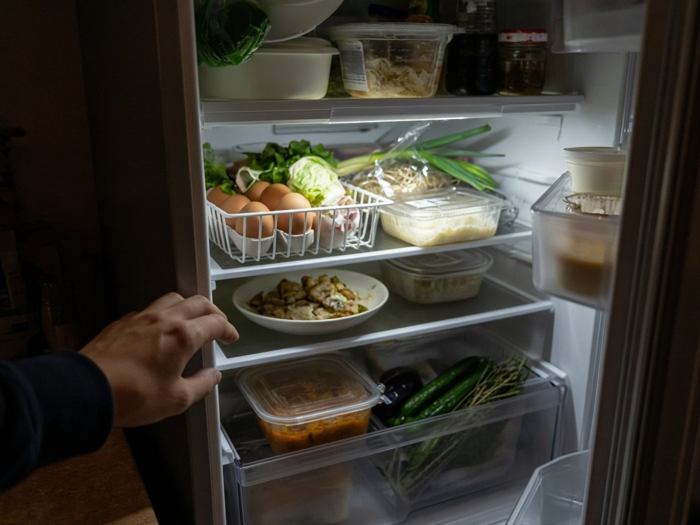
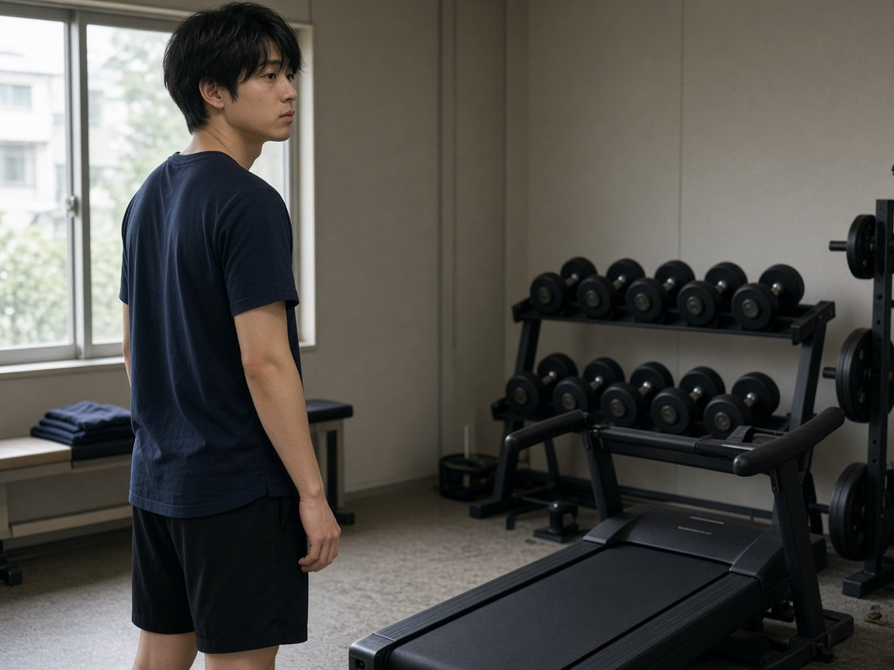
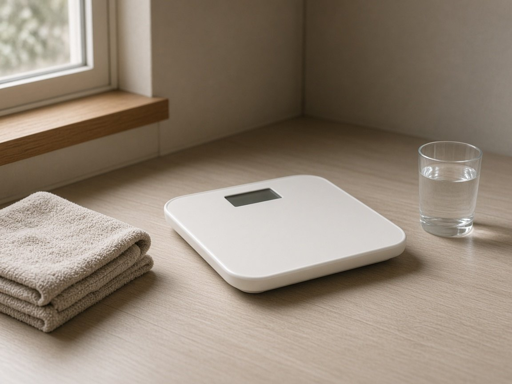
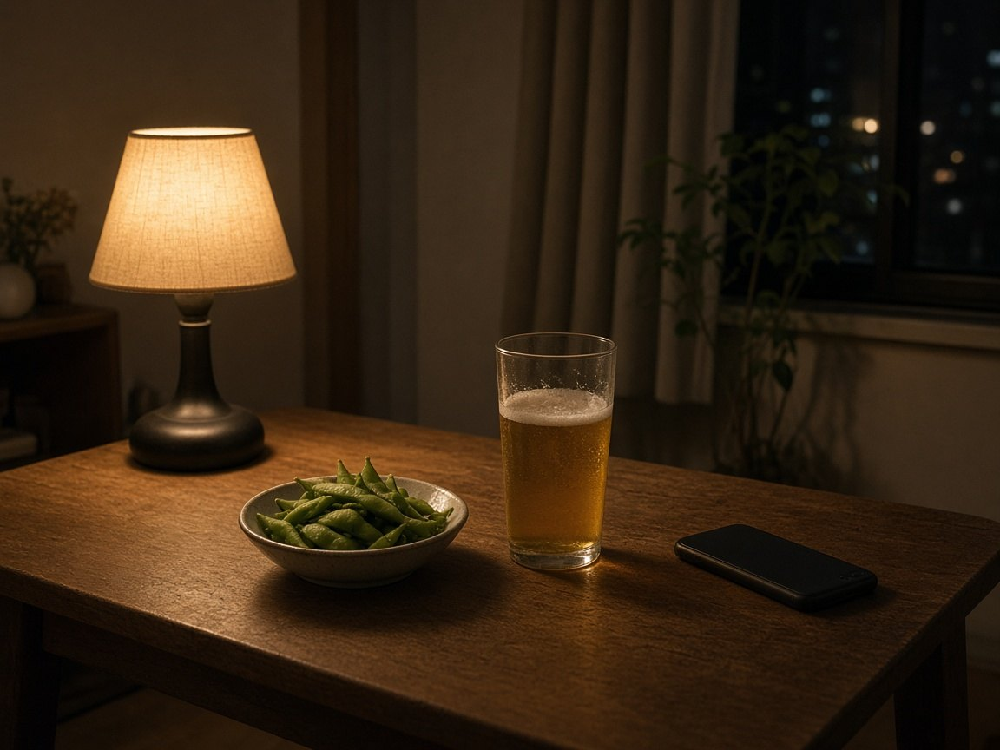

01
何を、どれだけ食べればいいか分からない。
冷蔵庫の前で立ち止まる夜。正解を探すほど、食事そのものが遅れます。
カロナビ
Energy management
食事も、運動も、体重も。
迷う前に、今日の収支だけを見る。
基本機能 無料 カロナビ+は任意
基本無料ではじめる診断・治療のためのアプリではありません。
Daily friction
忙しい日ほど、細かい栄養の話より先に必要なのは、今の収支です。

冷蔵庫の前で立ち止まる夜。正解を探すほど、食事そのものが遅れます。
入力したあとで、今日あとどれくらい食べられるかが曖昧なままなら、次の一手は出ません。

何分歩けばよいか、トレーニングをどこまで数えればよいか。単体の頑張りは、収支になりにくい。
カロリーも、PFCも。
計算は、画面の向こうへ。
まずは、今日の残りから。
基本無料ではじめるWhat it is
カロナビは、食事・運動・体重をまとめて見るアプリです。中心にあるのは「今日あと何kcalか」と、たんぱく質・脂質・炭水化物の目安。減量・維持・増量のどれを選んでも、出すのは今日の判断です。
複雑な計算は内側で行います。外側に残すのは、次にどう動くかだけ。医療の診断や治療の代わりにはなりません。
Three steps
01
今日あと何kcalか。たんぱく質、脂質、炭水化物の目安。先に、残りを見る。
02
手入力、バーコード（カメラと番号）、保存した食品、公開食品、テンプレート。食事のたびに、長い手順はいりません。
03
食べ過ぎた日も、超過を事実として見ます。隠さず、次の日の感覚を残すための記録です。
Inside the day
01
食べたものを残すだけでは、次の食事は決まりません。目標に対して、今日あとどれだけか。カロナビがその数字を先に置きます。
判断が、記録より前に来る。
02
カロリーだけでは、食事の中身は見えません。たんぱく質、脂質、炭水化物の目安を、今日の残りと一緒に確認できます。
数字は増やす。操作は増やさない。
03
手で入れる。バーコードをカメラで読む。番号から探す。前に保存した食品、公開されている食品、テンプレートからも足せます。公開食品の検索は、無料では1日5回までです。
04
運動はMETによる計算か、kcalの直接入力です。歩いた分も、トレーニングの分も、摂取と切り離さない。今日のエネルギーとして戻します。
05
体重は一覧で追加、編集、削除できます。朝の一回で成否は決まりません。長い収支の結果として、静かに残します。

06
アルコールは食事とは別の記録です。夜の一杯を、昼ごはんの誤差にしないためです。

For whom
Price
FREE
無料公開食品の検索は1日5回まで。食事テンプレート3、運動テンプレート3。
CALONAVI+
月額480円公開食品の検索や、テンプレートの上限を広げます。年額は4,800円の予定で、月額の12回より約2ヶ月分おトクです。
料金は作業上の予定価格です。最終の金額、内容、無料枠は App Store の購入画面の表示が正です。購入と復元はアプリ内で行います。
今日の残りだけ、
先に見てみる。
A day, imagined
利用者の声ではありません。想定している一日です。
朝食のあと、今日あと何kcalかを確認してから家を出る。計算式は開きません。
昼の数分で入力を終えて、午後の残りだけを残す。
超過は超過のまま見る。お酒は食事と分けて、翌日の感覚を残す。
上記は製品の使い方の想定であり、個人の体験談や効果の保証ではありません。
Questions
食事・運動・体重をまとめて、「今日あと何kcalか」から次の一手を短くするエネルギー管理アプリです。診断や治療のアプリではありません。
他社のサービスを下げる比較はしません。記録や助言が厚いサービスがある一方、カロナビは「今日のエネルギー判断」を主役にした設計です。用途の違いです。
必要です。Google、またはAppleでログインします。ゲストのまま使うことはできません。
基本機能には無料枠があります。カロナビ+の予定価格は月額480円、年額4,800円です。最終的な料金は App Store の購入画面の表示が正です。
App Store で公開しています。このページからのストアリンクは、いま準備中です。
使えません。一般的な式に基づく推定であり、診断、治療、医療機器の代替ではありません。体調に不安があるときは、医療機関に相談してください。
Start
App Store で公開中です。
ストアへのリンクは準備中です。
基本機能は無料ではじめられます。カロナビ+は、必要な人だけの任意オプションです。
| サービス名 | カロナビ |
|---|---|
| 区分 | エネルギー管理アプリ。医療機器ではなく、診断・治療を目的としません。 |
| 主な機能 | 今日あと何kcalか、PFCの目安、食事（手入力・バーコード・保存食品・公開食品・テンプレート）、アルコールの別記録、運動（METまたはkcal直接入力）、体重の一覧と編集、目標（減量・維持・増量） |
| ログイン | Google または Sign in with Apple。ゲスト利用はありません。 |
| 料金 | 無料枠あり。カロナビ+の予定価格は月額480円／年額4,800円。最終表示は App Store の購入画面が正です。 |
| 提供 | App Store で公開中。このページのストアリンクは準備中です。 |
| 運営 | 麹池成 |
| サポート | calonavi.ayg.support@gmail.com |
| 法務 | プライバシー、規約、特商法など |
| 更新日 | 2026-09-25 |